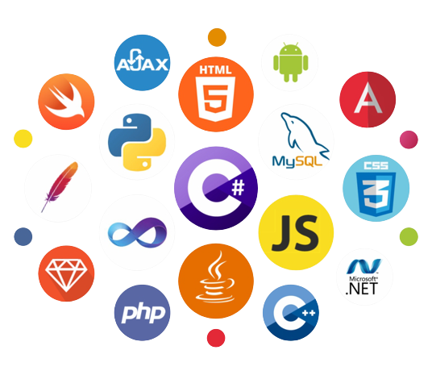

›› Industry Experience
2023 — Present
Software Engineer – Radical Imaging
• Engineered a flexible SaaS DICOM viewer using NestJS and NextJS. This cloud-based viewer effortlessly integrates with diverse workflows, maintaining its core functionality while providing adaptability.
• Developed software solutions to tackle challenges in medical imaging projects, primarily focusing on web development, cloud, and AI.
• Addressed and rectified critical security vulnerabilities within the AWS infrastructure, leading to substantial improvements in security and system integrity.
• Integrated AWS Marketplace into our SaaS offerings, resulting in a remarkable 40% surge in customer acquisition.
• Successfully integrated Pager-Duty for real-time outage monitoring, achieving a notable reduction in system downtime and streamlining issue resolution processes.
• Established validation methods for existing clinical tools in the viewer, streamlining the FDA application process and ensuring compliance with regulatory standards.
• Implemented comprehensive automated testing strategies, leveraging frameworks such as Jest, Cypress, and Playwright, which increased code reliability and reduced debugging time by 30%.
• Engineered multiple integrations for our SaaS DICOM viewer, notably with EPIC EHR, NVIDIA's MONAI for AI-enhanced medical imaging, and major cloud services, enhancing interoperability and utility in healthcare.
• Enhanced on-premise deployment and authentication for the OHIF viewer by integrating KeyCloak, oauth-2proxy, and nginx, resulting in a seamless and secure deployment process.
• Core maintainer of Cornerstone3D (https://www.cornerstonejs.org/) and Open Health Imaging Foundation OHIF (https://ohif.org/)
Spring 2023 • 3 mos
Software Engineer – Grafana Labs
• Designed and implemented an admin page for managing feature toggles, allowing users to toggle features independently, enhancing user autonomy, and reducing support load.
• Contributed to significantly reducing user reliance on support by facilitating direct visibility into active feature toggles on their Grafana instance.
• Authored comprehensive design documents detailing the new feature's functionality, architecture, and user flow.
• Gained hands-on experience with Golang, integrating backend API endpoints, and utilized React/TS for front-end components, ensuring responsive and dynamic UI/UX.
2022 — 2023 • 1 yr 2 mos
Software Engineer – CIUSSS West-Central Montreal
• Deployed and configured ML models on AWS, using EC2 accelerated compute instances and Sagemaker.
• Prepared ML models for inference using FastAPI, Nginx, and AWS Load Balancer.
• Built a user authentication system using AWS Cognito and FastAPI to verify user JWT tokens.
• Engineered several architectural diagrams and led planning of app development and infrastructure design.
• Programmed a web-based DICOM viewer with extreme performance by utilizing Vue3 and CornerstoneJS's robust accelerated image display and multi-threaded image decoding.
• Beta tester for Amazon HealthLake Imaging.
›› Education
›› Awards & Certificates

AWS Certified Solutions Architect - Professional
• Designed solutions on AWS for organizational complexity, and continuously improved existing solutions.
• Accelerated workload migration and modernization by utilizing several AWS services.
• Evaluated cloud application requirements and made architectural recommendations for deployment of applications on AWS.
• Provided expert guidance about architectural design that extends across multiple applications and projects within a complex organization.

McGill - Clinical Innovation Competition
• Winner of the First Marika Zelenka Roy Innovation Prize.
• Developed and built frontend, backend, and cloud resources for CoreSlicer, a cloud-based AI platform.
• Automated the measurement of frailty and body composition from medical images (CT, MRI, ultrasound).
• Collaborated with a multidisciplinary team including medical professionals, developers, data scientists, machine learning engineers, and interface designers.
• Demonstrated expertise in developing and implementing innovative solutions for healthcare applications.
• Empowered clinicians to individualize care for older patients, reducing postoperative complications, adverse events, and emergency readmissions.

AWS Certified Solutions Architect - Associate
• Earned the AWS Certified Solutions Architect certificate.
• Designed solutions by using appropriate AWS services and following architectural principles based on requirements.
• Demonstrated the ability to provide implementation guidance based on best practices to the organization throughout the workload life cycle.
• Designed and implemented resilient, high performing, secure and cost optimized architectures on AWS.
›› Projects
Distributed Serverless Workflow for Stock Price Movements
• Built a Serverless workflow that sends out an email notification when there is a 5% increase in Tesla's stock price.
• Utilized CloudWatch Events to trigger the workflow by sending a notification to SQS at 1-minute intervals.
• Programmed Lambda function in Python to consume the notification from SQS, then communicate with Yahoo Finance API to retrieve the current market price of the Tesla stock and store it in a DynamoDB database.
• Utilized DynamoDB streams to detect updates in the database and trigger a second Lambda function to calculate the change in price, then send an email notification via SES if there's a 5% increase.
›› Skills

Langauges
• Python(Flask, Django), JavaScript(Node.js, React.js, Vue.js), TypeScript, Java, HTML, CSS, SQL, C
Langauges
• Python(Flask, Django), JavaScript(Node.js, React.js, Vue.js), TypeScript, Java, HTML, CSS, SQL, C
Databases/Cloud
• AWS, SQL, DynamoDB, EC2, ELB, ASG, S3, RDS, Route53, SQS, SNS, ECS, VPC, Cognito, Fargate, Aurora, Lambda, CloudFront, Security Groups

Version Control
• Github.